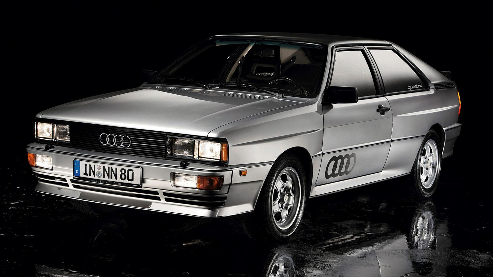
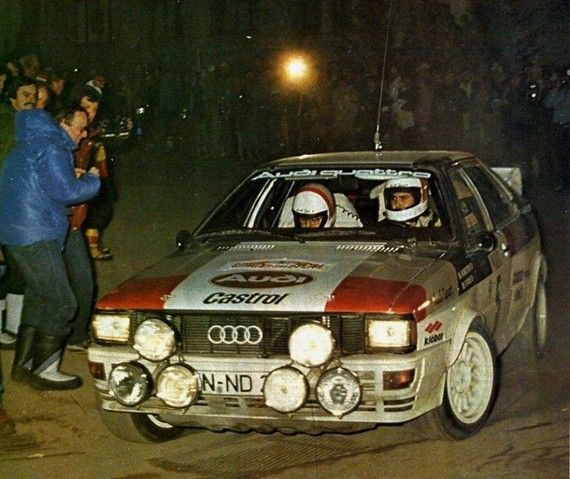
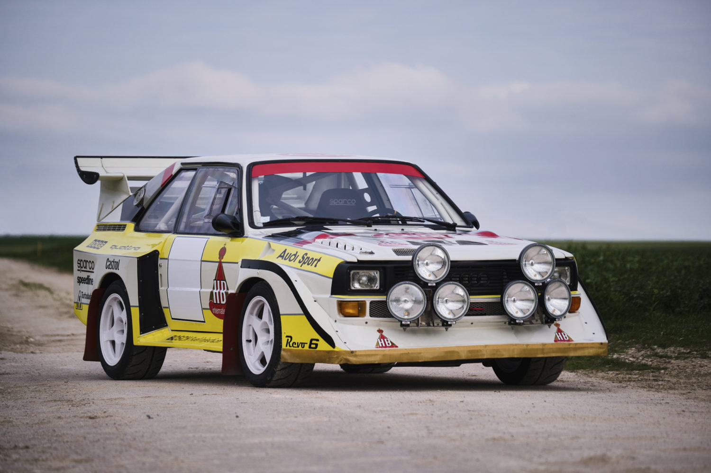
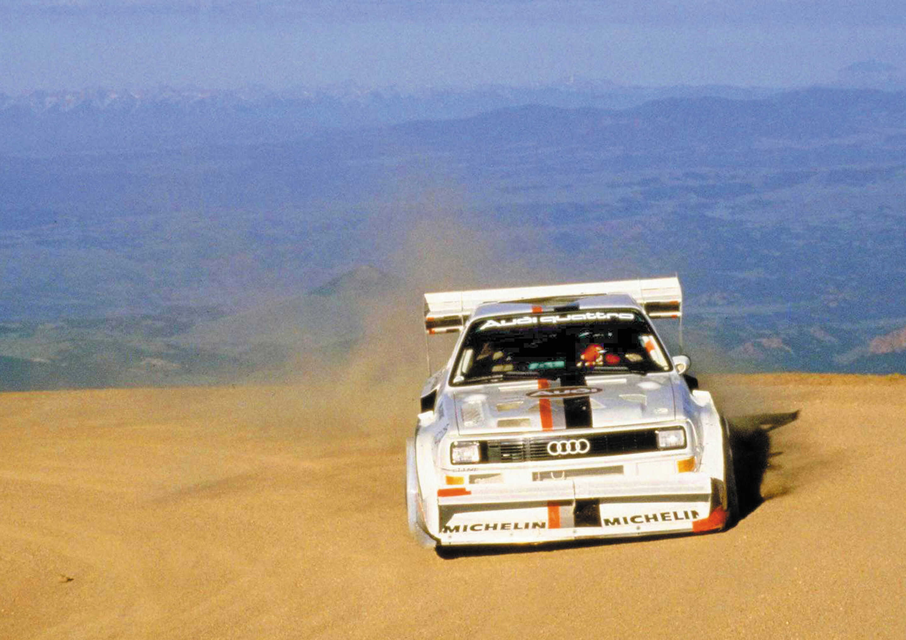
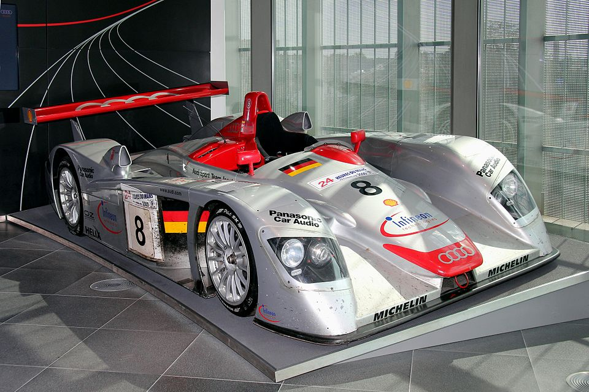
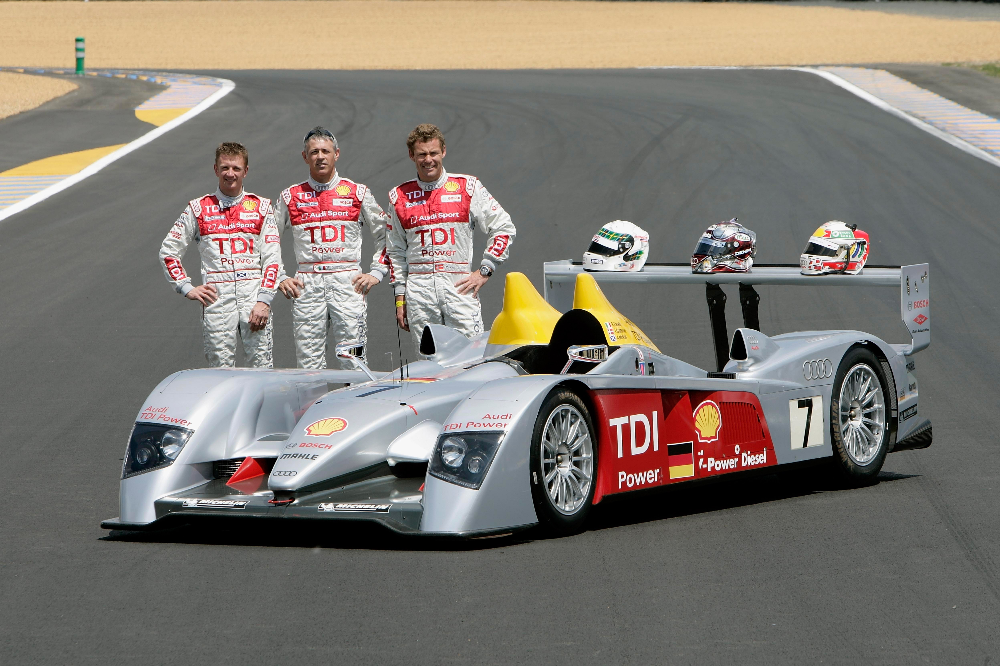
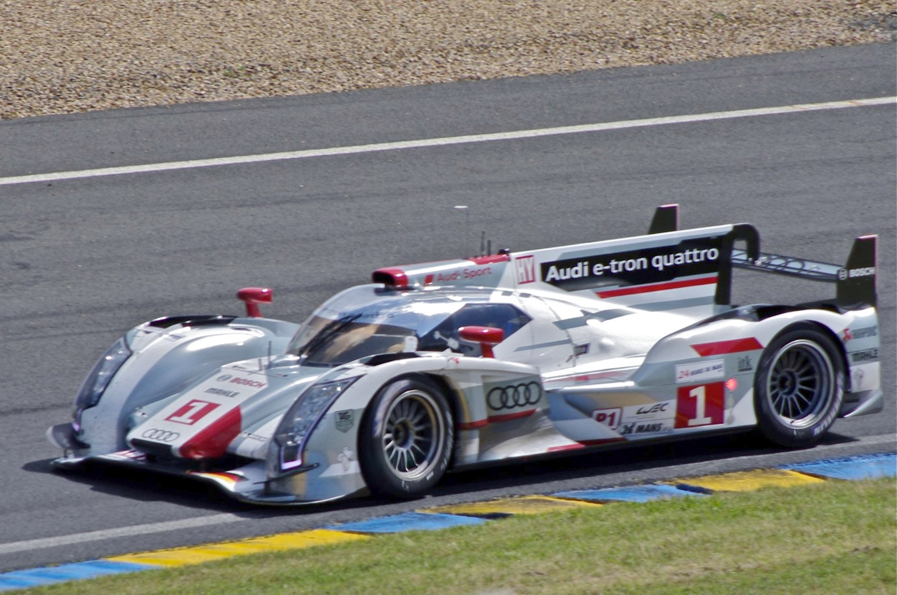
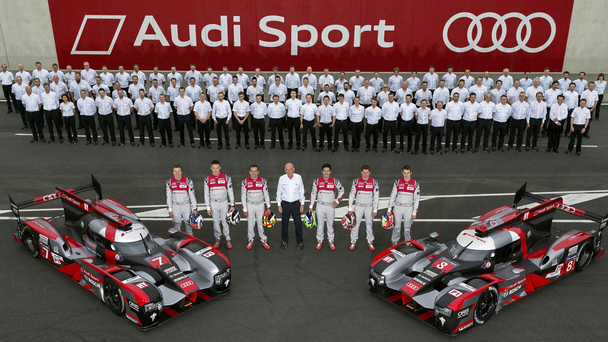
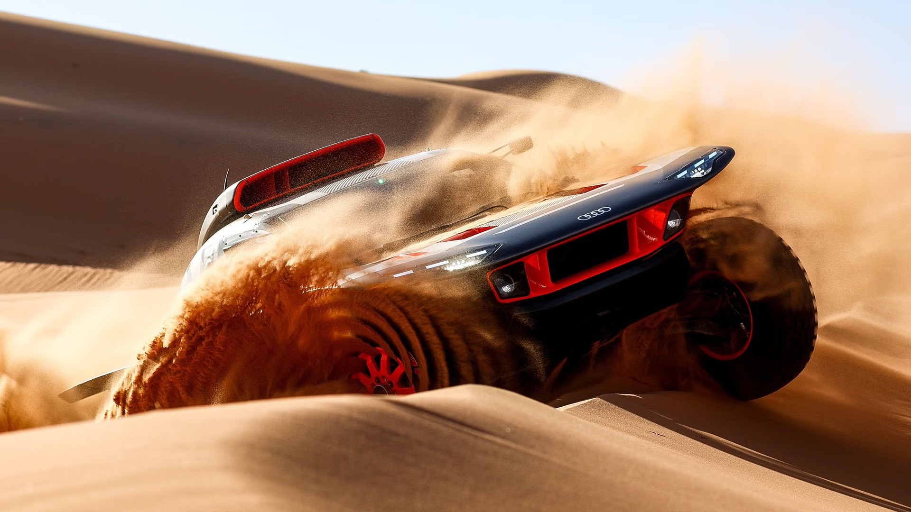

Les moments marquants de l'épopée Audi en compétition.

Ur-Quattro · 1980

Sport Quattro S1 · 1984

Audi en course · 1986

Pikes Peak · 1987

Audi R8 · Le Mans 2000

R10 TDI · Le Mans 2006

R18 e-tron quattro · 2012

Dernière victoire · Le Mans 2016

RS Q e-tron · Dakar 2022